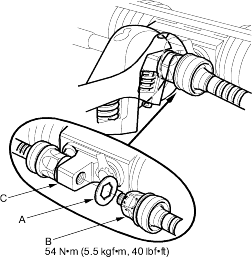
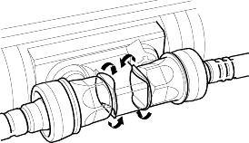

- Install the new lock washer (A) on the tie-rod (B) with the radiused side of the washer toward the tie-rod, and screw the tie-rod on the bracket (C). Repeat this step for the other tie-rod. Hold the bracket with one wrench, and tighten both tie-rods to the specified torque with another wrench.

- Bend the lock washer against the flat spots on the bracket with a large pair of pliers.
